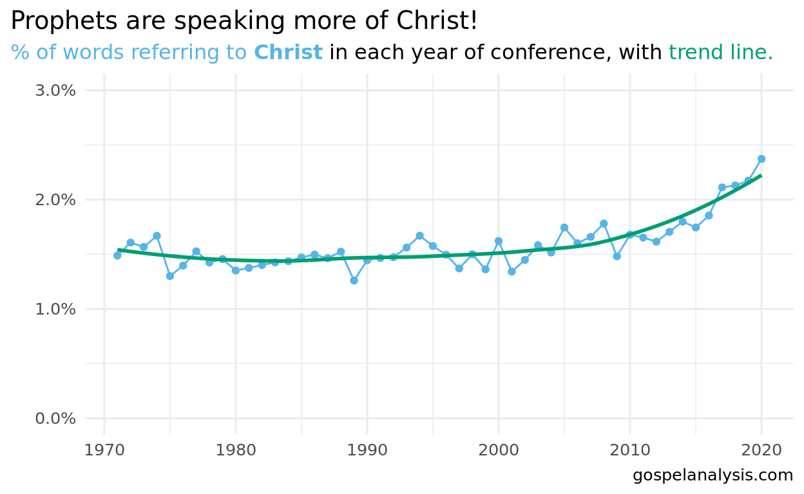
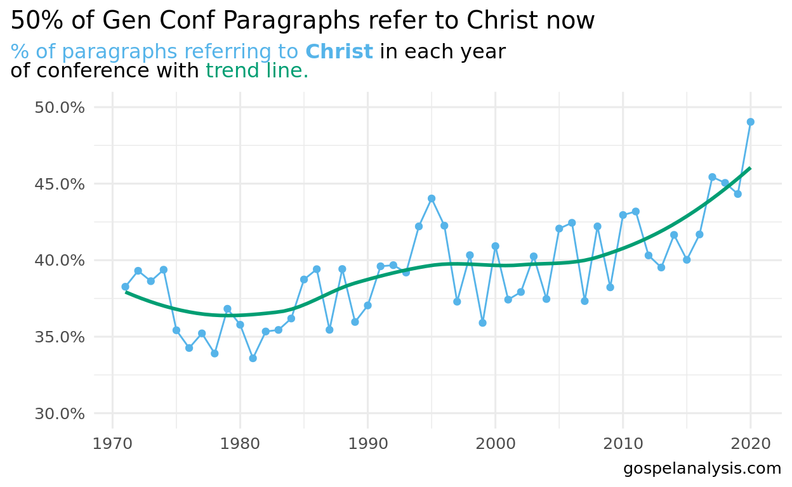

Christ is called by at least 100 names in the scriptures. Christ is referred to in 41% of all Book of Mormon scriptures. Speakers in General Conference speak of Christ at an accelerated rate. See who holds the record for the most references to Christ in a single talk.
A 1978 article by Susan Ward Easton, “Names of Christ in the Book of Mormon”, enumerated 100 names for the Savior. You can see those listed here:
Easton notes that there are 3,925 references to Christ in the Book of Mormon based on these phrases. In this article, it was discovered there were at least 4,499 references to those same names1. Comparing scriptures is interesting:
| References to Christ in the Scriptures | ||||||
|---|---|---|---|---|---|---|
| Scripture Volume | Verses in Volume | All References to Christ | At Least One Reference | |||
| # of References | References Per Verse | Verses | % Verses | |||
| Book of Mormon | 6,604 | 4,499 | 0.68 | 2,735 | 41% | |
| Doctrine and Covenants | 3,654 | 1,806 | 0.49 | 1,154 | 32% | |
| New Testament | 7,957 | 4,292 | 0.54 | 2,864 | 36% | |
| Old Testament | 23,145 | 3,619 | 0.16 | 3,092 | 13% | |
| Pearl of Great Price | 635 | 600 | 0.94 | 364 | 57% | |
| Total | 41,995 | 14,816 | 10,209 | |||
The Book of Mormon has more references to Christ than the other Testaments, but the Pearl of Great Price references the Savior the most.
How powerful that a whopping 41% of verses in the Book of Mormon refer to Christ! If you read just five verses, two of them are bound to inspire you to think of Him.
If we search for these same names of Christ as used in General Conference talks, we see that each year, the leaders of the Church speak of Christ thousands of times.
Are prophets speaking more of Christ? Each year, there are a different number of speakers and each talk is of a different length. In the 70’s, General Conference had multiple sessions. If we divide the number of words in a year by the number of references to Christ, we can see that recently about 2.5% of all words spoken in conference are of Christ.

To compare these numbers to the Book of Mormon, we computed the fraction of paragraphs in General Conference that speak of Christ. Remember, the Book of Mormon refers to Christ in 41% of its verses. General Conference talks now refer more to Christ per paragraph than the other standard Works (except for the Pearl of Great Price, at 57% of verses.)

Prophets are speaking more of Christ than ever before, and at an accelerated rate.
In 2000, there was a ‘break’ in the trend compared to before, meaning that authors started referring to Christ more than ever before. Speakers continued to break the trend for several years until 2011 when the ‘new trend’ was set. See footnote for methods. 2
As you can see, prophets continue to speak more and more of Christ. The blue shade represents a 95% probability band, or in other words, we’d expect that, based on past data, there’s a 95% chance that authors would speak of Christ, within this range.
So in April 2020, the max expectation was that authors would refer to Christ 2.25% of the time (top of blue band). In reality, they mentioned Him over 2.5% of every word.
A Dallin H Oak talk in the 70’s spoke of Christ 139 times. Check out the 20 talks that speak the most of Christ.3
President Nelson’s Hear Him talk in April 2020 referenced Christ 70 times (ranked 7th out of top 20).
Is it a wonder why Christ is being spoken of more by the Prophets?
And we talk of Christ, we rejoice in Christ, we preach of Christ, we prophesy of Christ, and we write according to our prophecies, that our children may know to what source they may look for a remission of their sins. 2 Nephi 25:26
It’s possible that the author’s analysis over counts some references that Easton excluded↩︎
We use the prophet package in R, built by Facebook, which helps do “time series” modeling, or forecasting. Prophet is used to understand time series trends, and predicts the future based on averages in the past. It also has the ability to detect what are called changepoints, or periods of time where the trends shift and experience a “new normal” if you will.↩︎
Note: The text parser used in this analysis would search for “Jesus” and “Christ” separately, so “Jesus Christ” would count as two references.↩︎